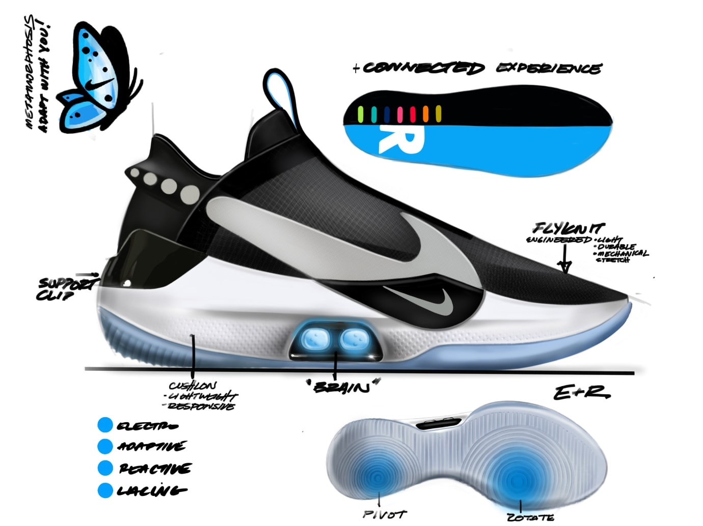

Brand Overview

Nike is a brand created by Nike, Inc. Formerly known as Blue Ribbon Company, Nike, Inc. is founded by Bill Bowerman and Phil Knight. Valued at around $30 billion, the brand has a great historical record of manufacturing and creating the top performance and lifestyle sneakers along with innovating technology.
Notable Technologies
Nike Air

Developed by former NASA engineer M. Frank Rudy, Nike Air is a special cushion technology for sneakers. It is a bubble-like midsole with air inside. The name comes from Nike's marketing strategy idea where people running or walking on "air" would provide great cushioning, since the air inside the bubble-like midsole won't wear out after repeated use. The air cushioning also provides more bounciness, making it ideal for atheletes.
Flyknit

Focusing on the concepts of lightness, breathability, and support, Nike's Flyknit technology is essentially a one-piece knitted upper instead of the traditional sturdy, fixed and multi-piece upper in sneakers. Flyknit is flexible and lighter due to the lightweight yarns that are used. While the various different types of knit patterns throughout makes it possible for some areas of Flyknit shoes have tighter weaves for more support.
Adapt
In 2016, Nike revealed the world's first smart self-lacing sneaker called Nike HyperAdapt 1.0. Based off their own concept of self-lacing sneakers Marty McFly first showcased and wore in Back to the Future Part II, Nike made this technology a reality and called it Nike Adapt. With small electric motors in the laces, the motors start to tighten the laces as soon as a person is steps into the sneakers, which the sneaker senses by weight. This technology is a huge step towards making lives easier for people with disabilites, since they can now put on sneakers without any difficulties.